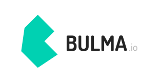

Bootstrap

Bootstrap se considera uno de los mejores frameworks CSS debido a su diseño receptivo . Fue desarrollado por Twitter y lanzado en el año 2011. HTML, SASS y Javascript están todos configurados en el framework Bootstrap. Para los dispositivos móviles, no es necesario un diseño separado para la vista móvil : agregue las clases requeridas y el sitio web se ajustará al tamaño de la ventana gráfica según el dispositivo.
La mayoría de los desarrolladores web los eligen para los frameworks front-end . En general, Bootstrap es el principal responsable de la popularidad de CSS como una alternativa de framework para el desarrollo web.
Tailwind CSS

Tailwind CSS es un framework de CSS de utilidad que es diferente de otros mejores frameworks de CSS como Bulma, Bootstrap, donde obtienes componentes prediseñados, que puedes usar como base para un mayor desarrollo. No viene con una plantilla predefinida, pero le permite incorporar su estilo único rápidamente.
Pure CSS

Pure CSS se considera uno de los mejores frameworks de CSS. Pure CSS está construido sobre Normalize.css y desarrollado por Yahoo. Comprende un conjunto de módulos CSS pequeños y receptivos que puede usar en cada proyecto web. Los sitios web que son intuitivos, más rápidos y visualmente atractivos se pueden crear rápidamente.
Bulma CSS
Bulma es basado en flexbox. Es una biblioteca CSS de código abierto 100% sensible e incluye una variedad de componentes predefinidos. Bulma utiliza un sistema conocido como mosaicos para construir cuadrículas, lo que hace que la página sea elegante y fluida. Tiene una estructura liviana que le permite importar solo los elementos que desea utilizar en su diseño web moderno .
Foundation CSS

Framework CSS de frontend sofisticado que incluye HTML, CSS, SASS y Javascript. Foundation se desarrolla con un enfoque que prioriza los dispositivos móviles y es altamente receptivo, más adecuado para aplicaciones web grandes que necesitan un host de diseño.
Referencias
- lambda Test. Best CSS Frameworks To Look Forward In 2021. Abril 13, 2021. Recuperado de https://www.lambdatest.com/blog/best-css-frameworks-2021/
- Code authority. 5 Best CSS Frameworks for 2021. Abril 16, 2021. Recuperado de https://es.wikipedia.org/wiki/Hoja_de_estilos_en_cascada